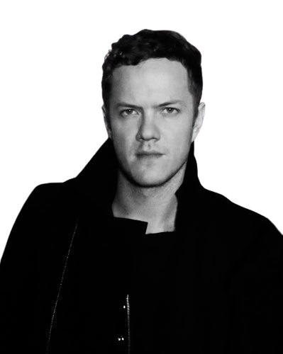
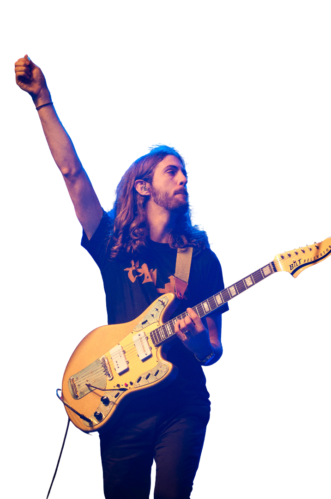
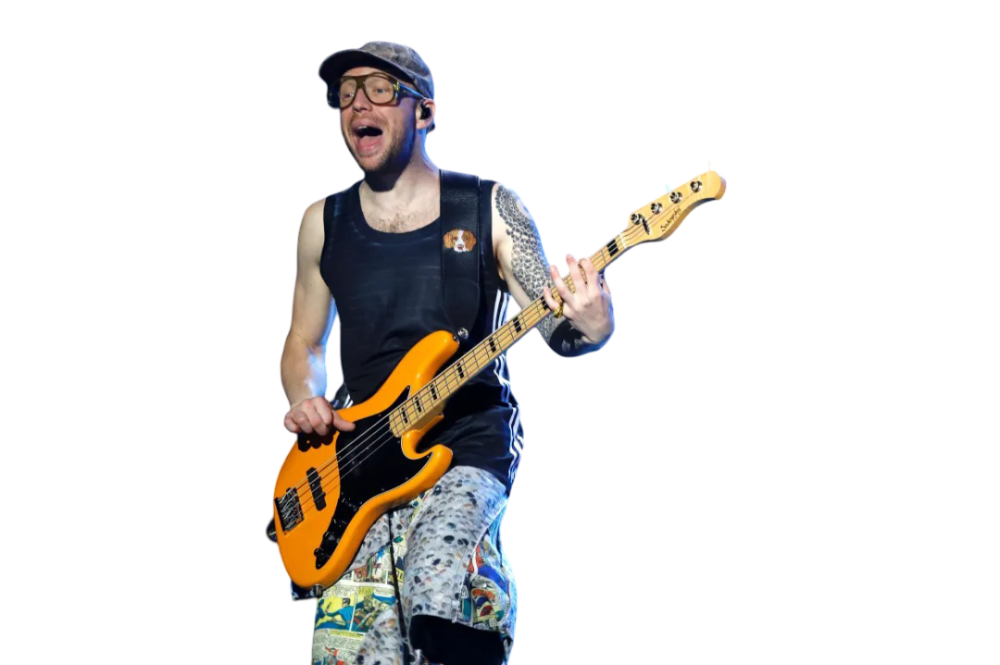

Miembros

Dan Reynolds (Las Vegas, 1987). Voz principal, letrista y fundador de la banda.
Líder carismático y motor creativo de Imagine Dragons.
Dan Reynolds - Voz

Wayne Sermon (American Fork, 1984). Guitarrista principal y productor de estudio.
Aporta el sonido guitarrero y la base musical del grupo.
Wayne Sermon - Guitarra

Ben McKee (Forestville, 1985). Bajista, teclista y arreglista.
Completa el sonido rítmico y armónico de la banda.
Ben McKee - Bajo